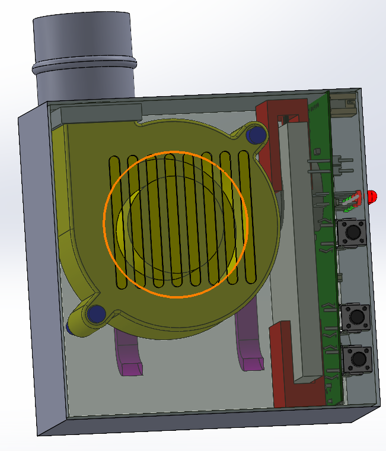

Validation
Fan Sound Test

In order for the mask to be as quiet as possible, the quietest fan needed to be determined. The sound (in dB) of each fan was measured at different voltages. The normal sound baseline is approximately 25 dB, and this value was subtracted from the recorded measurements of each fan's sound. The test determined that the medium and large fans are noisier and larger, thus being impractical choices for the mask. In contrast, sound was not detected from the small fan until it was measured at about 5V.
Version 1.2

In the next iteration, we changed the fan, from an axial fan to a centrifugal fan. The reason for this change the exhaust mechanism of both fans. The axial fan will exhaust is not directional, needing an attachment to direct air up the tube. The centrifugal fan solves this issue and provides a simpler design to implement. We decided to reposition the battery to save space and added brackets to hold it in place. We also used the same PCB model due to our timeline restrictions, but we knew in order to save more space and make a better design, we needed to brainstorm a new design around a PCB model with dimensions we wanted.
Version 1.2 - 3D Printed

Version 2.0 - Brainstorm
.jpg)
Our brainstorm for this new iteration allowed us to center our design over a new PCB model. We wanted to change the dimensions of it as well as configure more optimal positions for the buttons and LEDs so that saving space and functionality was implemented. Specifically, we wanted the PCB to be size of the fan that way it could be put behind the fan, and the buttons and LEDs moved to the top of the enclosure for easier access.
Version 2.0
After working alongside the hardware team we implemented this new design. Although this is not exactly what we wanted, we used this as a base to then go into our most current design.